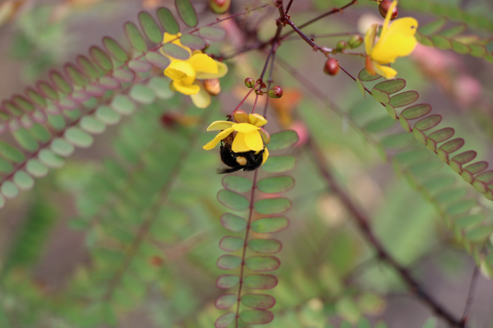
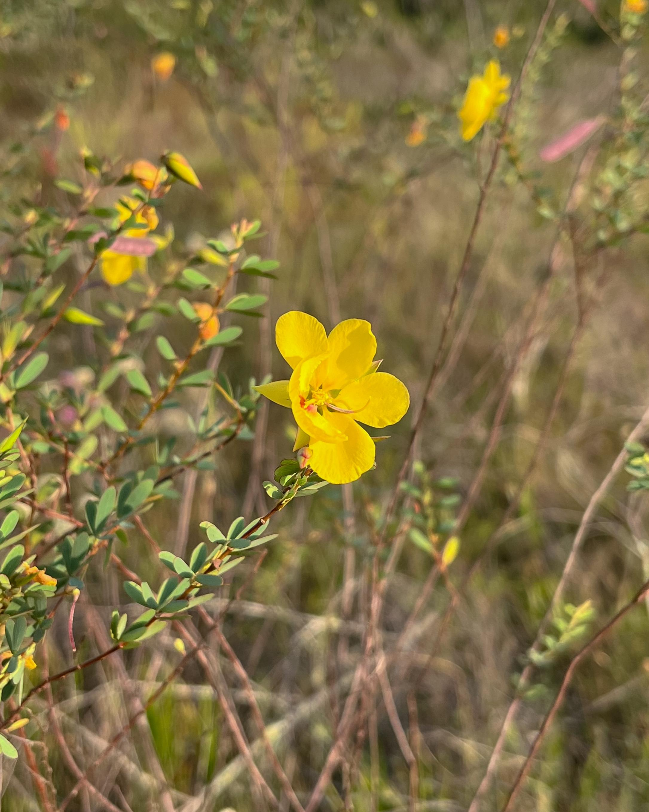
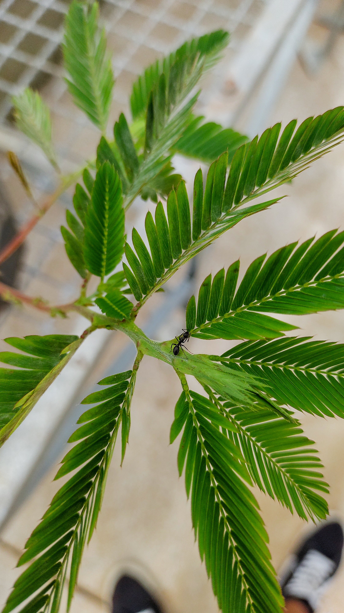
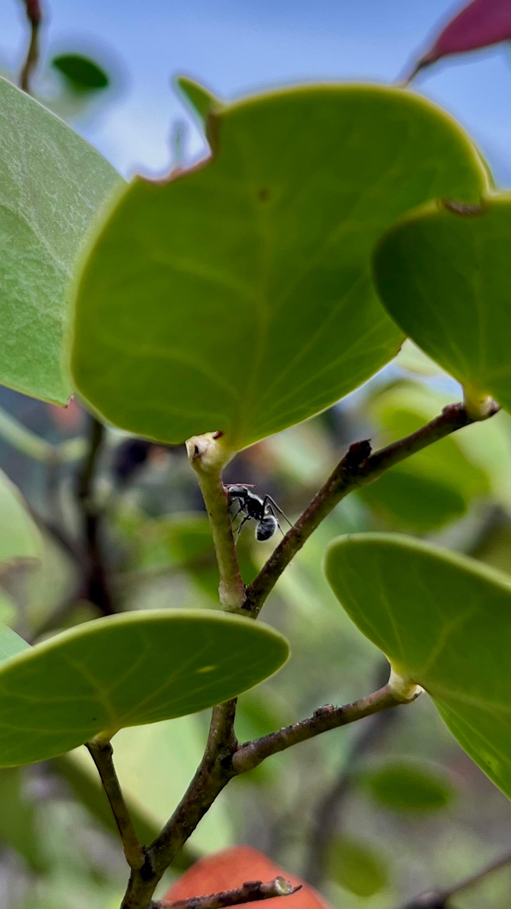
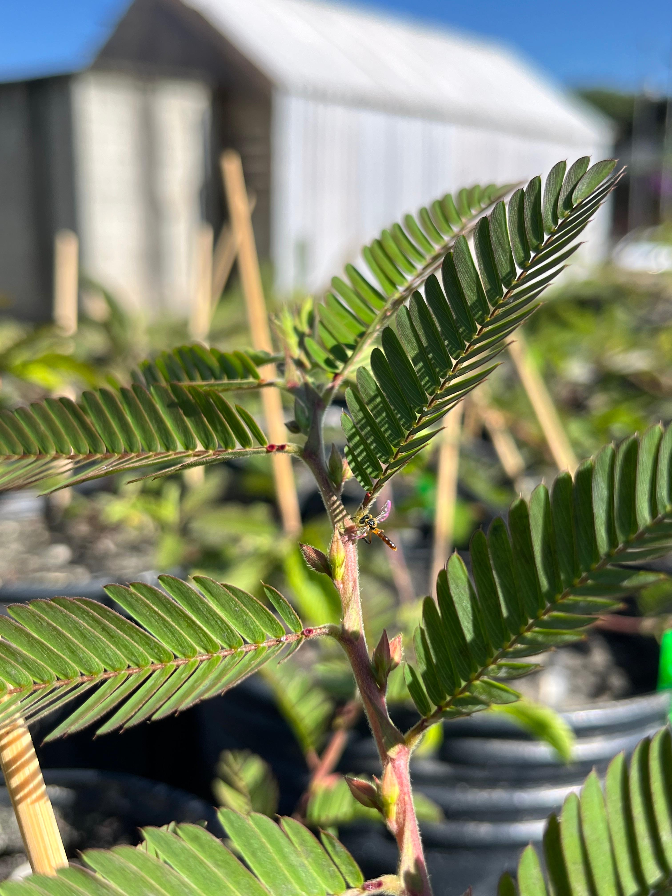
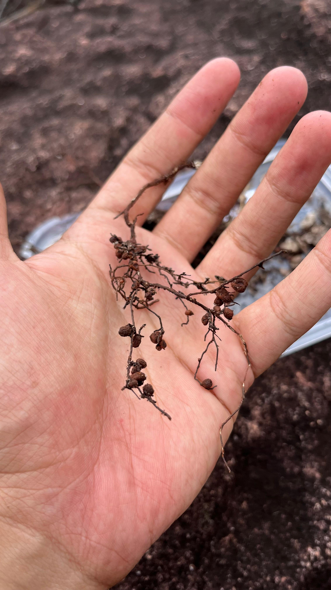
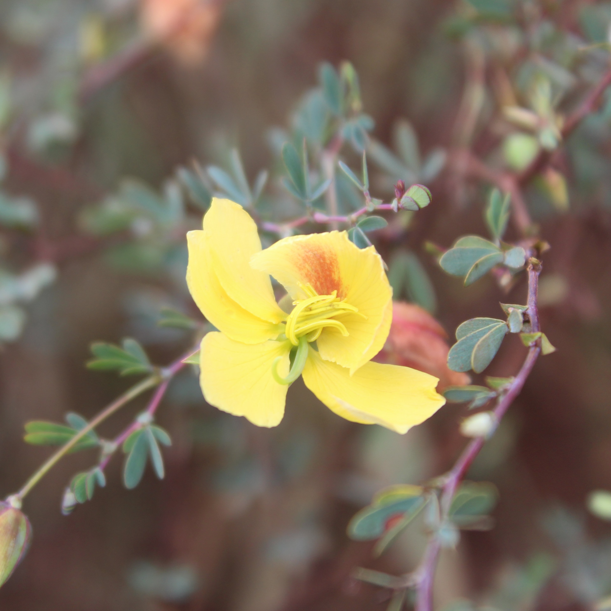
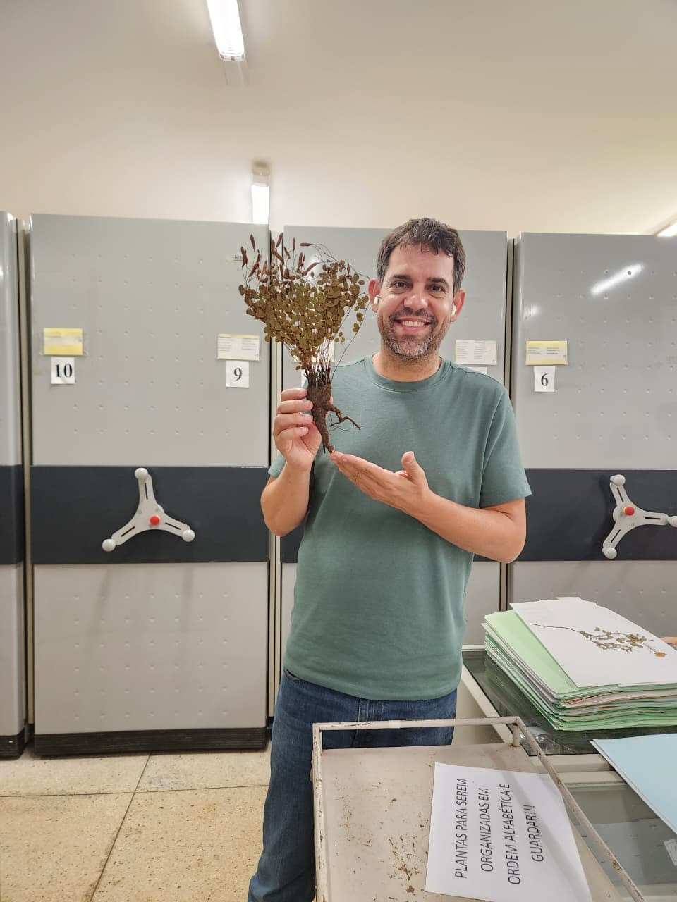

Laboratório de Interações Planta-Animal (LIPA)
Uma frase curta sobre o foco de pesquisa. Exemplo: estudamos como plantas e animais interagem e de que forma essas relações moldam os ecossistemas.







Linhas de pesquisa
Clique no nome para ver as publicações de cada linha.
-
Mutualismo de Defesa Planta-Formiga
Plantas oferecem néctar extrafloral ou abrigo às formigas, que em troca as protegem contra herbívoros. Investigamos como esse mutualismo responde às condições do ambiente.
-
Mutualismo de Polinização Planta-Abelha
Abelhas coletam néctar e pólen e, ao visitar as flores, garantem a reprodução das plantas. Estudamos como as plantas atraem e recompensam as abelhas.
-
Mutualismo de Nutrição Planta-Bactéria
Bactérias associadas às plantas ajudam na obtenção de nutrientes, como o nitrogênio, em troca de carboidratos e abrigo. Investigamos como essa associação contribui para o desenvolvimento das plantas.
-
Macroevolução
Investigamos como as interações planta-animal moldaram a diversificação de linhagens ao longo do tempo evolutivo, integrando dados filogenéticos, de história de vida e de ecologia funcional.

Prof. Dr. Anselmo Nogueira
Professor Adjunto na Universidade Federal do ABC (UFABC)
- Pós-Doutorado — University of Arizona, EUA (2015–2016)
- Pós-Doutorado — Instituto de Biociências, USP, Brasil (2012–2015)
- Doutorado em Ciências Biológicas (Botânica) — USP (2007–2011)
- Mestrado em Biologia (Ecologia) — INPA (2004–2006)
- Graduação em Ciências Biológicas — USP (1999–2002)